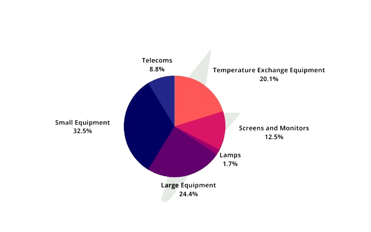
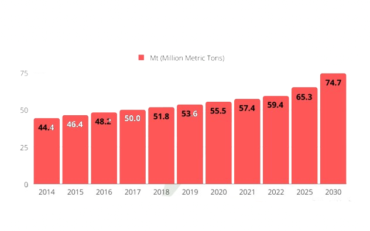

E-waste, short for electronic waste, refers to discarded electronic devices such as computers, smartphones, tablets, and appliances. These items contain hazardous materials like lead, mercury, and cadmium, which can be harmful to both human health and the environment if not disposed of properly. E-waste is a growing concern globally due to the rapid advancement of technology and the resulting increase in obsolete electronics. Proper recycling and disposal methods are crucial to minimize the negative impact of e-waste on our planet.
 E-waste poses several hazards to both human health and the environment. Electronic devices contain toxic materials like lead, mercury, cadmium, and brominated flame retardants, which can leach into soil and water if not disposed of properly. When burned, e-waste releases harmful chemicals into the air, contributing to air pollution and respiratory issues. Improper handling of e-waste during recycling processes can expose workers to hazardous substances, leading to health problems. Moreover, the accumulation of electronic waste in landfills contributes to soil and water contamination, impacting ecosystems and biodiversity. Thus, the improper disposal and management of e-waste present significant risks to both human well-being and environmental sustainability.
Preventing e-waste begins with mindful consumption and responsible disposal practices. Firstly, opting for durable electronic devices and considering repair options instead of immediate replacement can extend their lifespan. When it's time to discard electronics, donating or selling them for reuse is an excellent way to prevent waste. Additionally, proper recycling channels should be utilized to ensure hazardous materials are safely extracted and reused. Encouraging manufacturers to design products with longevity and recyclability in mind can also contribute to reducing e-waste. Ultimately, raising awareness about the importance of electronic waste management and making informed purchasing decisions are key steps in preventing e-waste and promoting a more sustainable future.